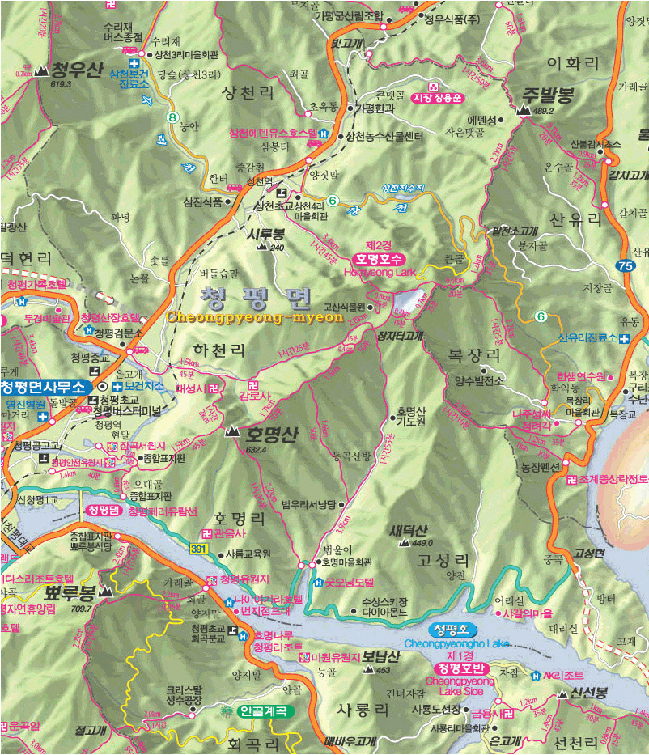
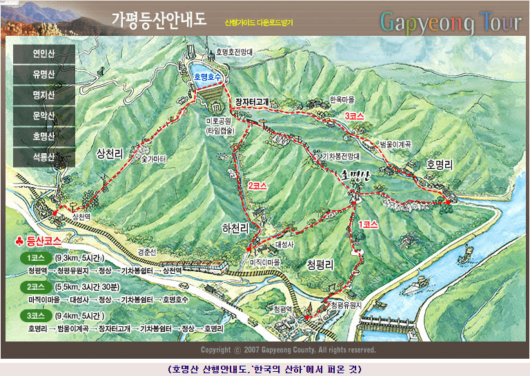
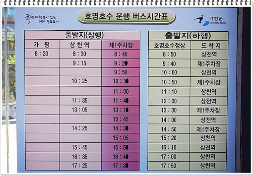

2020년
03월 29일 |
제1주차장-호명호수-전망대-팔각정-호명갤러리 |
지명의 유래
호명산은 옛날 산림이 우거지고 사람들의 왕래가 적었을 때 호랑이들이 많이 서식하여 호랑이 울음소리가 들려오곤 하였다는 데서 명명되었다.
호명호수는 국내 최초로 건설된 양수식 발전소의 상부저수지로 호명산의 수려한 산세와 더불어 넓은 저수지는 백두산 천지를 연상시키는 아름다운 절경이다.
느낀 점, 배운 것
- 경춘선의 명물 중 하나인 에펠탑이 있는 상천휴게소 직전에 호명호수로 가는 길이 있다.
- 겨울철에는 호명호수까지 버스가 올라가지 않는다.
- 제1주차장~호명호수까지 아스팥트 길이 지루하기는 하나 나름 숲이 우거져 있어 걸어 볼만한 길이다.
- 호명호수는 생각보다 멋지다. 전망대에서의 주변 조망, 호명갤러리에서의 호수 전망 모두 훌륭하다.
- 버스가 다닐 때 호명산까지의 능선길 산행을 하면 좋겠다.

